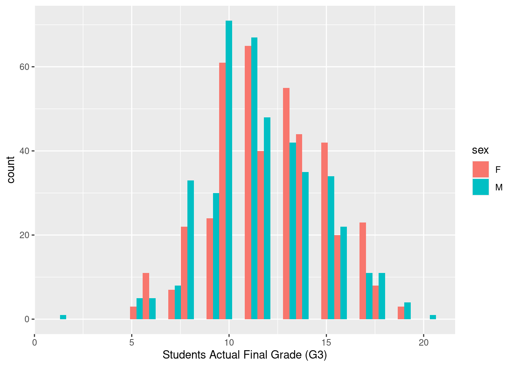
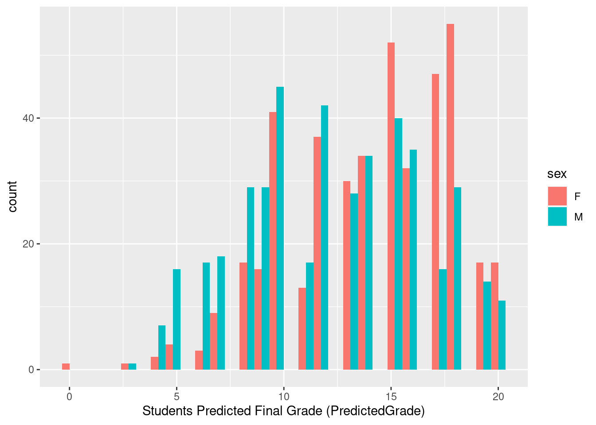

Code
library(tidyverse)
library(dplyr)
library(ggplot2)
performance<- read_csv("_data/CompleteDataAndBiases.csv")
knitr::opts_chunk$set(echo = TRUE)Kalimah Muhammad
November 11, 2022
Researchers have examined the differences impacting student achievement among genders for decades. Early meta-analyses conducted by Hyde (1990) revealed no significant difference between the groups’ cognitive abilities; yet intelligence and self-perception of ability, or self-esteem, were determined as the strongest predictors of academic success (Spinath et al., 2010, Booth and Gerard, 2011). Some research explains differences in achievement partially by stereotype threat (ST). Stereotype threat, originally used to research the vulnerability of racial stereotypes on aptitude tests, is defined as “being at risk of confirming, as self-characteristic, a negative stereotype about one’s group” (Steele and Aronson, 1995). Conventional research has focused on gender differences to stereotype threat (Moè & Putwain, 2020), and two prevailing theories have emerged.
The first theory suggests that ST affects male and female students differently. Here male students achieve better outcomes when stereotype threat is present than stereotype lift, and the reverse is true for female students who are adversely impacted by stereotype threat and positively impacted by stereotype lift (Johnson et al., 2012). Other studies debunk this theory suggesting no evidence of ST as a phenomenon in female students (Warne, 2022), particularly in the domain of mathematical achievement (Ganley et al., 2013). A second theory exists that the effects of ST may not be fully realized outcomes immediately but affect achievement over time as chronic ST impacts working memory and intellectual helplessness in girls’ math scores (Bedyńska, Krejtz, and Sedek, 2019) and male language arts scores (Bedyńska, Krejtz, and Sedek, 2020).
This study tests both theories as an assumption in predicting student achievement based on actual student performance data and predictions based on the participants’ exposure to three types of stereotypes activation:
-No stereotypes,
-Case-based stereotypes where students were shown three student profiles in which one female student had a high grade and two male students had low grades, and
-Statistical stereotypes where students were shown statistics that boys performed less well in school than girls.
Based on this experiment and prior research, I will test the following hypotheses: 1. Does exposure to negative stereotypes about male achievement and positive stereotypes of female achievement result in higher predicted achievement among both male and female students?
2. Is there a statistically significant difference between male and female achievement based on the type of stereotype activation within each group?
Data for this project was collected from Kaggle (Performance vs. Predicted Performance, 2022) and is a collection of existing student performance data from a study by Cortez and Silva (2008) on predicting secondary school student performance and the collector’s addition of stereotype activation for machine learning. The data included information on actual student demographics such as gender, parents’ highest level of education, as well as time studying vs. free time, number of absences, and grade on a final exam, among other variables.
A few important variables to define include:
-Index - number of students included in the original and predicted data (N=856 of the original 991 students)
-Participant ID - number associated with participants making predictions (N=107)
-Sex - student’s sex (binary: ‘F’ - female or ‘M’ - male)
-Studytime - weekly study time is categorized as 1= less than 2 hours, 2= 2-5 hours and 3= 5+ hours
-Freetime - free time after school group as 1 = low, 2= medium, 3 = high
-Goout - how often a student goes out with friends where 1 is very low and 4 is very often
-Absences - number of school absences 1 - 7 where 7 represents any absences equal to or above 7
-Walc - weekend alcohol consumption
-Parents_edu - the higher of original variables mother’s edu and father’s edu, where 4 = the highest level of education
-G3 - final grade (numeric: from 0 to 20)
-Reason - The reason for why a student chose to go to the school in question. The levels are close to home, school’s reputation, school’s curricular and other
-PredictedGrade - the grade participants predicted based on actual data and their exposed level of StereotypeActivation
-StereotypeActivation - see three levels of stereotype activation above
-Pass - A binary variable showing whether G3 is a passing grade (i.e. >=10) or not
-PassFailStrategy - A binary variable showing whether the PredictedGrade is a passing grade (i.e. >=10) or not
Below is a summary of the variables.
index ParticipantID name sex
Min. : 1.0 Min. : 1 Length:856 Length:856
1st Qu.:241.8 1st Qu.: 27 Class :character Class :character
Median :487.0 Median : 54 Mode :character Mode :character
Mean :486.9 Mean : 54
3rd Qu.:727.2 3rd Qu.: 81
Max. :990.0 Max. :107
studytime freetime romantic Walc
Min. :1.000 Min. :1.000 Length:856 Min. :1.000
1st Qu.:1.000 1st Qu.:2.000 Class :character 1st Qu.:1.000
Median :2.000 Median :2.000 Mode :character Median :2.000
Mean :1.887 Mean :2.183 Mean :2.284
3rd Qu.:2.000 3rd Qu.:3.000 3rd Qu.:3.000
Max. :3.000 Max. :3.000 Max. :4.000
goout Parents_edu absences reason
Min. :1.000 Min. :1.000 Min. :0.000 Length:856
1st Qu.:2.000 1st Qu.:2.000 1st Qu.:0.000 Class :character
Median :3.000 Median :3.000 Median :2.000 Mode :character
Mean :3.022 Mean :2.854 Mean :2.794
3rd Qu.:4.000 3rd Qu.:4.000 3rd Qu.:5.000
Max. :4.000 Max. :4.000 Max. :7.000
G3 Pass PredictedGrade PredictedRank
Min. : 1.00 Mode :logical Min. : 0.00 Min. :1.00
1st Qu.:10.00 FALSE:149 1st Qu.:10.00 1st Qu.:2.75
Median :12.00 TRUE :707 Median :14.00 Median :4.50
Mean :11.97 Mean :13.14 Mean :4.50
3rd Qu.:14.00 3rd Qu.:16.00 3rd Qu.:6.25
Max. :20.00 Max. :20.00 Max. :8.00
StereotypeActivation Predicted_Pass_PassFailStrategy
Length:856 Mode :logical
Class :character FALSE:170
Mode :character TRUE :686
Predicted_Pass_RankingStrategy
Mode :logical
FALSE:284
TRUE :572
The next two graphs compare the actual final grades vs. the predicted grade for both genders.
`stat_bin()` using `bins = 30`. Pick better value with `binwidth`.
`stat_bin()` using `bins = 30`. Pick better value with `binwidth`.
In the first graph, there is a fairly normal distribution of actual grades for both male and female students. Male students are more concentrated near the median value of 10 while female students are skewed slightly higher near the 11 value. However, in the second graph of predicted grades for both groups of students, predicted values are skewed higher than actual. Grade predictions for female students are significantly higher than actual as well as predictions for male students.
# A tibble: 2 × 2
sex `mean(studytime)`
<chr> <dbl>
1 F 2.07
2 M 1.71# A tibble: 2 × 2
sex `mean(freetime)`
<chr> <dbl>
1 F 2.07
2 M 2.30# A tibble: 2 × 2
sex `mean(goout)`
<chr> <dbl>
1 F 2.99
2 M 3.05# A tibble: 2 × 2
sex `mean(absences)`
<chr> <dbl>
1 F 2.70
2 M 2.89# A tibble: 2 × 2
sex `mean(G3)`
<chr> <dbl>
1 F 12.1
2 M 11.8# A tibble: 2 × 2
sex `mean(PredictedGrade)`
<chr> <dbl>
1 F 14.0
2 M 12.3The above tables summarize differences in the mean values for several variables of interest by gender. Here we see, female students score slightly higher in study time (2.07 vs. 1.7) and while lower in free time (2.07 vs, 2.3), goout (3 vs. 3.05), absences (2.7 vs. 2.9). These would suggest female students may have a slightly higher grade based on good practices which is proven by the actual grades in G3 (12.15 vs. 11.80). However, the larger discrepancies in predicted rages (14.0 for females vs. 12.28 for males) may be attributed to the stereotype activation.
Additionally we can perform a t-test on both male and female actual and predicted score.
One Sample t-test
data: f_performance$G3
t = 87.488, df = 427, p-value < 2.2e-16
alternative hypothesis: true mean is not equal to 0
95 percent confidence interval:
11.87658 12.42249
sample estimates:
mean of x
12.14953
One Sample t-test
data: m_performance$G3
t = 83.481, df = 427, p-value < 2.2e-16
alternative hypothesis: true mean is not equal to 0
95 percent confidence interval:
11.51670 12.07209
sample estimates:
mean of x
11.79439
One Sample t-test
data: f_performance$PredictedGrade
t = 77.636, df = 427, p-value < 2.2e-16
alternative hypothesis: true mean is not equal to 0
95 percent confidence interval:
13.66150 14.37121
sample estimates:
mean of x
14.01636
One Sample t-test
data: m_performance$PredictedGrade
t = 61.908, df = 427, p-value < 2.2e-16
alternative hypothesis: true mean is not equal to 0
95 percent confidence interval:
11.88369 12.66304
sample estimates:
mean of x
12.27336 Based on the above tests, we can say with a 95% confidence that the following groups have the following means:
Actual female grade - 12.14953
Predicted female grade - 14.01636
Actual male grade - 11.79439
Predicted male grade - 12.27336
The graph below calculates the mean predicted grade for both groups based on the type of stereotype activation.
`summarise()` has grouped output by 'sex'. You can override using the `.groups`
argument.# A tibble: 6 × 3
# Groups: sex [2]
sex StereotypeActivation `mean(PredictedGrade)`
<chr> <chr> <dbl>
1 F CaseBased 13.4
2 F None 14.1
3 F Statistics 14.5
4 M CaseBased 12.0
5 M None 12.7
6 M Statistics 12.2In the cross tabulation above, participants predicted the grade of female students 1 - 2.35 points higher than the average actual female performance (12.15). For male students, predictions were closer to the average actual performance (11.80) ranging at a difference of 0.16 - 0.88 points. With no stereotype activation, males students garnered their highest predicted average at 12.68 suggesting introducing stereotypes negatively affected predictions in male students although still higher than actual performance. For female students, introducing statistics of lower male performance garnered the highest grade prediction for female students. For both genders, case based stereotype activation which included one example of a high female score and two examples of lower male scores produced the lowest predicted grades.
This may suggest that other variables in the study having an influential role in predicting scores outside of stereotype activation.
To test my hypotheses, I will examine if the predicted grade was higher or lower than the actual grade among the genders controlling for various types of stereotype activation. Here the response variable is the predicted grade, and the explanatory variables are the types of gender as controlled by the exposure of the types of stereotype activation.
Does exposure to negative stereotypes about male achievement and positive stereotypes of female achievement result in higher predicted achievement among both male and female students?
Based on the cross tabulation above, exposure to negative statistics of male performance, resulted in the highest prediction for female grades even more than no stereotype exposure. However, those same statistics resulted in lower prediction of male grades than no stereotype exposure.
Is there a statistically significant difference between male and female achievement based on the type of stereotype activation within each group?
Call:
lm(formula = PredictedGrade ~ StereotypeActivation, data = f_performance)
Residuals:
Min 1Q Median 3Q Max
-13.404 -2.500 0.500 2.939 6.596
Coefficients:
Estimate Std. Error t value Pr(>|t|)
(Intercept) 13.4044 0.3186 42.068 <2e-16 ***
StereotypeActivationNone 0.6562 0.4540 1.445 0.1491
StereotypeActivationStatistics 1.0956 0.4334 2.528 0.0118 *
---
Signif. codes: 0 '***' 0.001 '**' 0.01 '*' 0.05 '.' 0.1 ' ' 1
Residual standard error: 3.716 on 425 degrees of freedom
Multiple R-squared: 0.01488, Adjusted R-squared: 0.01024
F-statistic: 3.209 on 2 and 425 DF, p-value: 0.04138
Call:
lm(formula = PredictedGrade ~ StereotypeActivation, data = m_performance)
Residuals:
Min 1Q Median 3Q Max
-9.2000 -3.2000 0.0368 3.0368 8.0368
Coefficients:
Estimate Std. Error t value Pr(>|t|)
(Intercept) 11.9632 0.3516 34.021 <2e-16 ***
StereotypeActivationNone 0.7186 0.5010 1.434 0.152
StereotypeActivationStatistics 0.2368 0.4783 0.495 0.621
---
Signif. codes: 0 '***' 0.001 '**' 0.01 '*' 0.05 '.' 0.1 ' ' 1
Residual standard error: 4.101 on 425 degrees of freedom
Multiple R-squared: 0.005007, Adjusted R-squared: 0.0003245
F-statistic: 1.069 on 2 and 425 DF, p-value: 0.3442Here, there appears that activating stereotype statistics resulted in a statistically significant difference in prediction of female grades. For predictions in male students, case based stereotypes resulted in the lowest predictions.
Call:
lm(formula = PredictedGrade ~ StereotypeActivation * sex, data = performance)
Coefficients:
(Intercept) StereotypeActivationNone
13.40441 0.65619
StereotypeActivationStatistics sexM
1.09559 -1.44118
StereotypeActivationNone:sexM StereotypeActivationStatistics:sexM
0.06239 -0.85882
Call:
lm(formula = PredictedGrade ~ StereotypeActivation * sex, data = performance)
Residuals:
Min 1Q Median 3Q Max
-13.4044 -2.9632 0.4091 3.0368 8.0368
Coefficients:
Estimate Std. Error t value Pr(>|t|)
(Intercept) 13.40441 0.33554 39.948 < 2e-16 ***
StereotypeActivationNone 0.65619 0.47811 1.372 0.17028
StereotypeActivationStatistics 1.09559 0.45639 2.401 0.01658 *
sexM -1.44118 0.47453 -3.037 0.00246 **
StereotypeActivationNone:sexM 0.06239 0.67615 0.092 0.92651
StereotypeActivationStatistics:sexM -0.85882 0.64543 -1.331 0.18367
---
Signif. codes: 0 '***' 0.001 '**' 0.01 '*' 0.05 '.' 0.1 ' ' 1
Residual standard error: 3.913 on 850 degrees of freedom
Multiple R-squared: 0.05618, Adjusted R-squared: 0.05063
F-statistic: 10.12 on 5 and 850 DF, p-value: 1.989e-09When adding gender as an interacting variables, r-squared and the adjusted r-squared increased and we find a statistically significant result for male grades predicted after exposure to case based stereotypes.
Bedyńska, S., Krejtz, I. & Sedek, G. Chronic stereotype threat and mathematical achievement in age cohorts of secondary school girls: mediational role of working memory, and intellectual helplessness. Soc Psychol Educ 22, 321–335 (2019). https://doi.org/10.1007/s11218-019-09478-6
Bedyńska, S., Krejtz, I., Rycielski, P. et al. Stereotype threat as an antecedent to domain identification and achievement in language arts in boys: a cross-sectional study. Soc Psychol Educ 23, 755–771 (2020). https://doi.org/10.1007/s11218-020-09557-z
Booth MZ, Gerard JM. Self-esteem and academic achievement: a comparative study of adolescent students in England and the United States. Compare. 2011 Sep;41(5):629-648. doi: 10.1080/03057925.2011.566688
Cortez, P. and Silva, A. Using Data Mining to Predict Secondary School Student Performance. In A. Brito and J. Teixeira Eds., Proceedings of 5th FUture BUsiness TEChnology Conference (FUBUTEC 2008) pp. 5-12, Porto, Portugal, April, 2008, EUROSIS, ISBN 978-9077381-39-7
Ganley, C. M., Mingle, L. A., Ryan, A. M., Ryan, K., Vasilyeva, M., & Perry, M. (2013). An examination of stereotype threat effects on girls’ mathematics performance. Developmental Psychology, 49(10), 1886–1897. https://doi.org/10.1037/a0031412
Hyde, Janet Shibley. “Meta-analysis and the psychology of gender differences.” Signs: Journal of Women in Culture and Society 16.1 (1990): 55-73.
Johnson, H., Barnard-Brak, L., Saxon, T., & Johnson, M.K. (2012) An Experimental Study of the Effects of Stereotype Threat and Stereotype Lift on Men and Women’s Performance in Mathematics, The Journal of Experimental Education, 80:2, 137-149, DOI: 10.1080/00220973.2011.567312
Moè, A., & Putwain, D. W. (2020). An evaluative message fosters mathematics performance in male students but decreases intrinsic motivation in female students. Educational Psychology, 1–20. https://doi.org/10.1080/01443410.2020.1730767
Spinath, B., Harald Freudenthaler, H., & Neubauer, A. C. (2010). Domain-specific school achievement in boys and girls as predicted by intelligence, personality and motivation. Personality and Individual Differences, 48(4), 481-486. https://doi.org/10.1016/j.paid.2009.11.028
Steele, Claude M., and Joshua Aronson. “Stereotype threat and the intellectual test performance of African Americans.” Journal of personality and social psychology 69.5 (1995): 797.
Warne, R. T. (2022). No Strong Evidence of Stereotype Threat in Females: A Reassessment of the Meta-Analysis. Journal of Advanced Academics, 33(2), 171–186. https://doi.org/10.1177/1932202X211061517
Data source: Anonymous. (2022). Performance vs. Predicted Performance [Data set]. Kaggle. https://doi.org/10.34740/KAGGLE/DSV/4282405
---
title: "Final Part 2"
author: "Kalimah Muhammad"
desription: "Final Part 2: Analyses"
date: "11/11/2022"
format:
html:
toc: true
code-fold: true
code-copy: true
code-tools: true
categories:
- finalpt2
- Kalimah Muhammad
---
```{r}
#| label: setup
#| warning: false
library(tidyverse)
library(dplyr)
library(ggplot2)
performance<- read_csv("_data/CompleteDataAndBiases.csv")
knitr::opts_chunk$set(echo = TRUE)
```
## Background
Researchers have examined the differences impacting student achievement among genders for decades. Early meta-analyses conducted by Hyde (1990) revealed no significant difference between the groups’ cognitive abilities; yet intelligence and self-perception of ability, or self-esteem, were determined as the strongest predictors of academic success (Spinath et al., 2010, Booth and Gerard, 2011). Some research explains differences in achievement partially by stereotype threat (ST). Stereotype threat, originally used to research the vulnerability of racial stereotypes on aptitude tests, is defined as “being at risk of confirming, as self-characteristic, a negative stereotype about one's group” (Steele and Aronson, 1995). Conventional research has focused on gender differences to stereotype threat (Moè & Putwain, 2020), and two prevailing theories have emerged.
The first theory suggests that ST affects male and female students differently. Here male students achieve better outcomes when stereotype threat is present than stereotype lift, and the reverse is true for female students who are adversely impacted by stereotype threat and positively impacted by stereotype lift (Johnson et al., 2012). Other studies debunk this theory suggesting no evidence of ST as a phenomenon in female students (Warne, 2022), particularly in the domain of mathematical achievement (Ganley et al., 2013). A second theory exists that the effects of ST may not be fully realized outcomes immediately but affect achievement over time as chronic ST impacts working memory and intellectual helplessness in girls’ math scores (Bedyńska, Krejtz, and Sedek, 2019) and male language arts scores (Bedyńska, Krejtz, and Sedek, 2020).
## Hypotheses
This study tests both theories as an assumption in predicting student achievement based on actual student performance data and predictions based on the participants' exposure to three types of stereotypes activation:
-No stereotypes,
-Case-based stereotypes where students were shown three student profiles in which one female student had a high grade and two male students had low grades, and
-Statistical stereotypes where students were shown statistics that boys performed less well in school than girls.
Based on this experiment and prior research, I will test the following hypotheses:
1. Does exposure to negative stereotypes about male achievement and positive stereotypes of female achievement result in higher predicted achievement among both male and female students?
2. Is there a statistically significant difference between male and female achievement based on the type of stereotype activation within each group?
```{r}
performance<- arrange(performance,(index)) #arrange table by index in ascending order
```
## Data
Data for this project was collected from Kaggle (Performance vs. Predicted Performance, 2022) and is a collection of existing student performance data from a study by Cortez and Silva (2008) on predicting secondary school student performance and the collector’s addition of stereotype activation for machine learning. The data included information on actual student demographics such as gender, parents' highest level of education, as well as time studying vs. free time, number of absences, and grade on a final exam, among other variables.
A few important variables to define include:
-Index - number of students included in the original and predicted data (N=856 of the original 991 students)
-Participant ID - number associated with participants making predictions (N=107)
-Sex - student's sex (binary: 'F' - female or 'M' - male)
-Studytime - weekly study time is categorized as 1= less than 2 hours, 2= 2-5 hours and 3= 5+ hours
-Freetime - free time after school group as 1 = low, 2= medium, 3 = high
-Goout - how often a student goes out with friends where 1 is very low and 4 is very often
-Absences - number of school absences 1 - 7 where 7 represents any absences equal to or above 7
-Walc - weekend alcohol consumption
-Parents_edu - the higher of original variables mother's edu and father's edu, where 4 = the highest level of education
-G3 - final grade (numeric: from 0 to 20)
-Reason - The reason for why a student chose to go to the school in question. The levels are close to home, school's reputation, school's curricular and other
-PredictedGrade - the grade participants predicted based on actual data and their exposed level of StereotypeActivation
-StereotypeActivation - see three levels of stereotype activation above
-Pass - A binary variable showing whether G3 is a passing grade (i.e. >=10) or not
-PassFailStrategy - A binary variable showing whether the PredictedGrade is a passing grade (i.e. >=10) or not
Below is a summary of the variables.
```{r}
summary(performance)
```
The next two graphs compare the actual final grades vs. the predicted grade for both genders.
```{r}
ggplot(performance, aes(x=G3, fill=sex))+ geom_histogram(position = "dodge")+labs(x="Students Actual Final Grade (G3)")
ggplot(performance, aes(x=PredictedGrade, fill=sex))+ geom_histogram(position = "dodge")+labs(x="Students Predicted Final Grade (PredictedGrade)")
```
In the first graph, there is a fairly normal distribution of actual grades for both male and female students. Male students are more concentrated near the median value of 10 while female students are skewed slightly higher near the 11 value. However, in the second graph of predicted grades for both groups of students, predicted values are skewed higher than actual. Grade predictions for female students are significantly higher than actual as well as predictions for male students.
```{r}
by_sex<-performance%>% group_by(sex)
by_sex%>% summarise(mean(studytime))
by_sex%>% summarise(mean(freetime))
by_sex%>% summarise(mean(goout))
by_sex%>% summarise(mean(absences))
by_sex%>% summarise(mean(G3))
by_sex%>% summarise(mean(PredictedGrade))
```
The above tables summarize differences in the mean values for several variables of interest by gender. Here we see, female students score slightly higher in study time (2.07 vs. 1.7) and while lower in free time (2.07 vs, 2.3), goout (3 vs. 3.05), absences (2.7 vs. 2.9). These would suggest female students may have a slightly higher grade based on good practices which is proven by the actual grades in G3 (12.15 vs. 11.80). However, the larger discrepancies in predicted rages (14.0 for females vs. 12.28 for males) may be attributed to the stereotype activation.
Additionally we can perform a t-test on both male and female actual and predicted score.
```{r}
#create two tables for female students and male students
f_performance<-performance%>%
filter(sex=="F")
m_performance<-performance%>%
filter(sex=="M")
t.test(f_performance$G3)
t.test(m_performance$G3)
t.test(f_performance$PredictedGrade)
t.test(m_performance$PredictedGrade)
```
Based on the above tests, we can say with a 95% confidence that the following groups have the following means:
Actual female grade - 12.14953
Predicted female grade - 14.01636
Actual male grade - 11.79439
Predicted male grade - 12.27336
The graph below calculates the mean predicted grade for both groups based on the type of stereotype activation.
```{r}
performance%>%
group_by(sex, StereotypeActivation)%>%
summarise(mean(PredictedGrade))
```
In the cross tabulation above, participants predicted the grade of female students 1 - 2.35 points higher than the average actual female performance (12.15). For male students, predictions were closer to the average actual performance (11.80) ranging at a difference of 0.16 - 0.88 points. With no stereotype activation, males students garnered their highest predicted average at 12.68 suggesting introducing stereotypes negatively affected predictions in male students although still higher than actual performance. For female students, introducing statistics of lower male performance garnered the highest grade prediction for female students. For both genders, case based stereotype activation which included one example of a high female score and two examples of lower male scores produced the lowest predicted grades.
This may suggest that other variables in the study having an influential role in predicting scores outside of stereotype activation.
## Methodology and Results
To test my hypotheses, I will examine if the predicted grade was higher or lower than the actual grade among the genders controlling for various types of stereotype activation. Here the response variable is the predicted grade, and the explanatory variables are the types of gender as controlled by the exposure of the types of stereotype activation.
1. Does exposure to negative stereotypes about male achievement and positive stereotypes of female achievement result in higher predicted achievement among both male and female students?
Based on the cross tabulation above, exposure to negative statistics of male performance, resulted in the highest prediction for female grades even more than no stereotype exposure. However, those same statistics resulted in lower prediction of male grades than no stereotype exposure.
2. Is there a statistically significant difference between male and female achievement based on the type of stereotype activation within each group?
```{r}
summary(lm(PredictedGrade ~ StereotypeActivation, data=f_performance))
summary(lm(PredictedGrade ~ StereotypeActivation, data=m_performance))
```
Here, there appears that activating stereotype statistics resulted in a statistically significant difference in prediction of female grades. For predictions in male students, case based stereotypes resulted in the lowest predictions.
```{r}
performance_fit<-lm(PredictedGrade ~ StereotypeActivation*sex, data=performance)
performance_fit
summary(performance_fit) #fit based on gender, predicted grade, and stereotype activation
```
When adding gender as an interacting variables, r-squared and the adjusted r-squared increased and we find a statistically significant result for male grades predicted after exposure to case based stereotypes.
#### Sources
Bedyńska, S., Krejtz, I. & Sedek, G. Chronic stereotype threat and mathematical achievement in age cohorts of secondary school girls: mediational role of working memory, and intellectual helplessness. Soc Psychol Educ 22, 321–335 (2019). https://doi.org/10.1007/s11218-019-09478-6
Bedyńska, S., Krejtz, I., Rycielski, P. et al. Stereotype threat as an antecedent to domain identification and achievement in language arts in boys: a cross-sectional study. Soc Psychol Educ 23, 755–771 (2020). https://doi.org/10.1007/s11218-020-09557-z
Booth MZ, Gerard JM. Self-esteem and academic achievement: a comparative study of adolescent students in England and the United States. Compare. 2011 Sep;41(5):629-648. doi: 10.1080/03057925.2011.566688
Cortez, P. and Silva, A. Using Data Mining to Predict Secondary School Student Performance. In A. Brito and J. Teixeira Eds., Proceedings of 5th FUture BUsiness TEChnology Conference (FUBUTEC 2008) pp. 5-12, Porto, Portugal, April, 2008, EUROSIS, ISBN 978-9077381-39-7
Ganley, C. M., Mingle, L. A., Ryan, A. M., Ryan, K., Vasilyeva, M., & Perry, M. (2013). An examination of stereotype threat effects on girls’ mathematics performance. Developmental Psychology, 49(10), 1886–1897. https://doi.org/10.1037/a0031412
Hyde, Janet Shibley. "Meta-analysis and the psychology of gender differences." Signs: Journal of Women in Culture and Society 16.1 (1990): 55-73.
Johnson, H., Barnard-Brak, L., Saxon, T., & Johnson, M.K. (2012) An Experimental Study of the Effects of Stereotype Threat and Stereotype Lift on Men and Women's Performance in Mathematics, The Journal of Experimental Education, 80:2, 137-149, DOI: 10.1080/00220973.2011.567312
Moè, A., & Putwain, D. W. (2020). An evaluative message fosters mathematics performance in male students but decreases intrinsic motivation in female students. Educational Psychology, 1–20. https://doi.org/10.1080/01443410.2020.1730767
Spinath, B., Harald Freudenthaler, H., & Neubauer, A. C. (2010). Domain-specific school achievement in boys and girls as predicted by intelligence, personality and motivation. Personality and Individual Differences, 48(4), 481-486. https://doi.org/10.1016/j.paid.2009.11.028
Steele, Claude M., and Joshua Aronson. "Stereotype threat and the intellectual test performance of African Americans." Journal of personality and social psychology 69.5 (1995): 797.
Warne, R. T. (2022). No Strong Evidence of Stereotype Threat in Females: A Reassessment of the Meta-Analysis. Journal of Advanced Academics, 33(2), 171–186. https://doi.org/10.1177/1932202X211061517
Data source: Anonymous. (2022). <i>Performance vs. Predicted Performance</i> [Data set]. Kaggle. https://doi.org/10.34740/KAGGLE/DSV/4282405